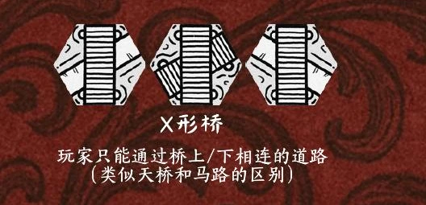

声明与置换
玩家认为已不存在任何抵达终点的路线时，可声明“我被堵死了”，将地图上任意一张已放置的牌与手牌或公共牌区中的一张交换。
旋转铺路、路线反制与玩家质疑：在不断变化的水域中争先抵达彼岸。

Mushroom Rush 使用 62 张地块构建动态水域。玩家从地图下方码头出发，沿公共道路或自己家族颜色对应的路径前进，第一个抵达对岸终点的玩家获胜。
地块可以旋转摆放，也可以放在不相连的空置水域。铺路既能帮助自己前进，也能限制对手的路线。
| 顺序 | 玩家行动 |
|---|---|
| 准备 | 每人 2 张起始手牌；公共牌区展示 4 张牌。 |
| 出牌：二选一 | 从手牌打出 1 张；或弃 1 张手牌，使用公共牌区的 1 张。地块可旋转摆放。 |
| 补牌 | 手牌补至 2 张，公共牌区补至 4 张。 |
| 移动 | 出牌后移动至可通行路径；允许前进与后退，但被堵住的后路无法通行。 |
双来源出牌把私有手牌与公共信息连在一起。使用公共牌需要弃掉一张手牌，让玩家在路线需求和手中选项之间做取舍。
| 地块 | 规则 |
|---|---|
| 漩涡 | 完全无法通行，不能被桥覆盖。 |
| 浮力平台 | 开放区域，可以通向任意方向。 |
| 水怪 | 摧毁一个格子中除漩涡以外的其他牌。 |
| 桥 | 可放在空置水域，也可叠放在既有路径上改变方向或跨越断点；叠放时至少连接一条道路，不能用侧边堵路。 |
| X 形桥 | 上、下道路分别连通，按跨线桥与地面道路的区分通行。 |

这些规则让阻断、绕行、跨越与移除成为不同手段。漩涡同时具有不可通行、不可被桥覆盖、不可被水怪摧毁的限制。
玩家认为已不存在任何抵达终点的路线时，可声明“我被堵死了”，将地图上任意一张已放置的牌与手牌或公共牌区中的一张交换。
如果仍有可行路线且被其他玩家指出，则不能置换；如果无人察觉，规则仍允许置换。
这套规则将路线识别与玩家间的判断加入竞速，保留虚张声势和质疑空间。